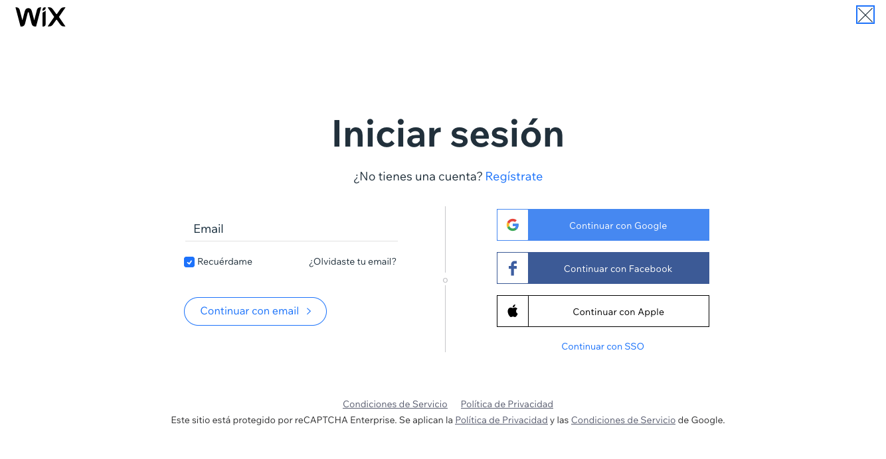
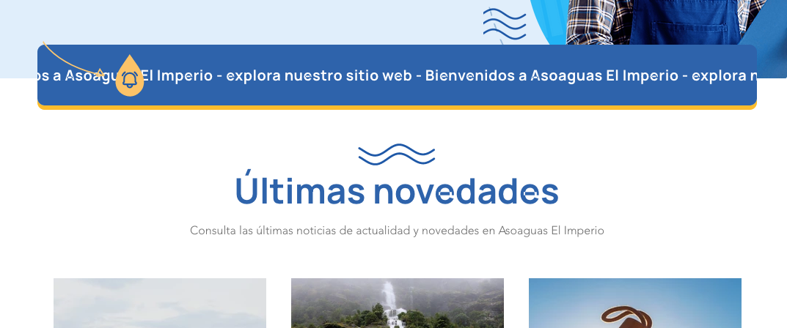
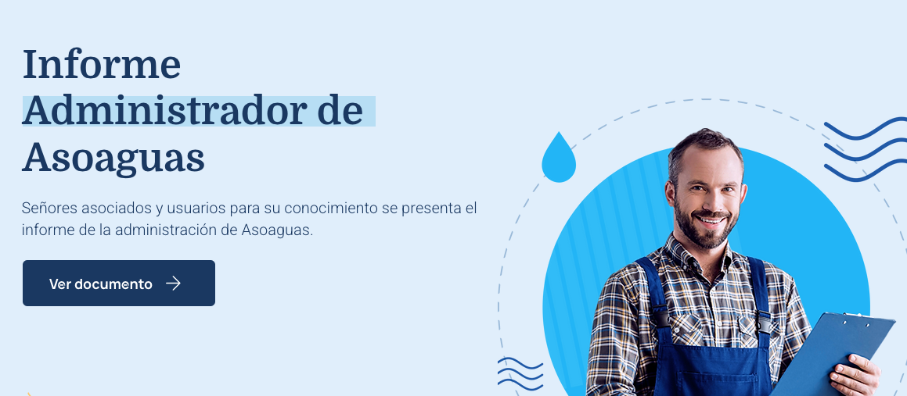
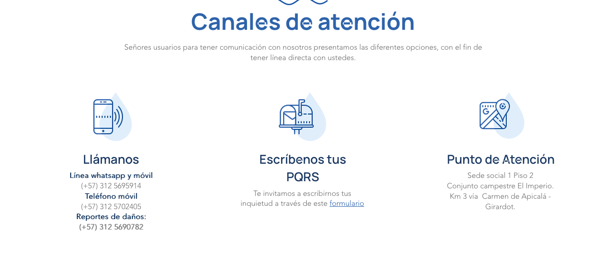
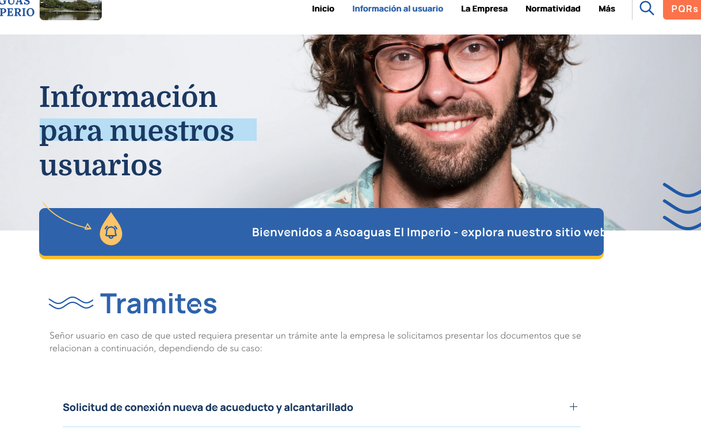
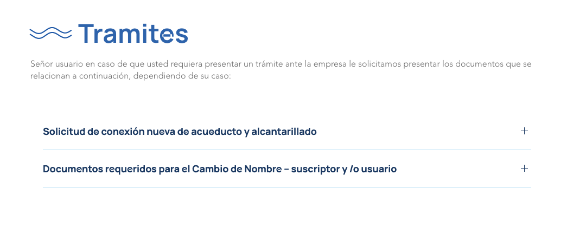
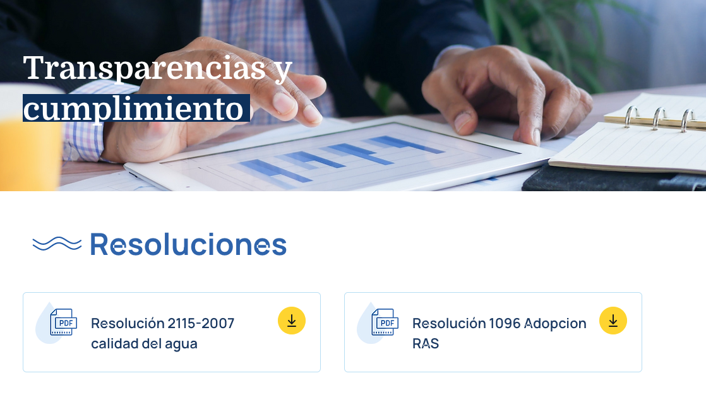
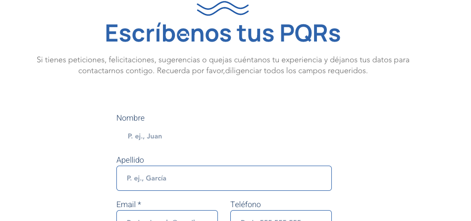
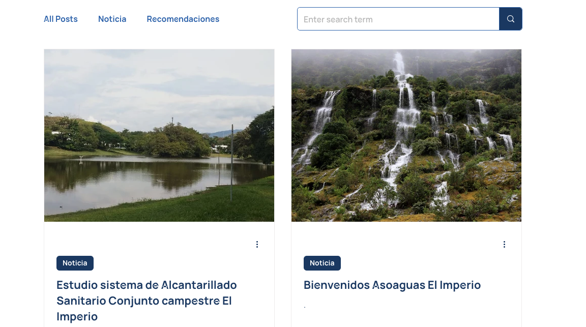

Como ingresar al administrador de la pagina

Editar Homepage

Notificaciones
Este componente se usa para informar a los usuarios sobre alertas y comunicados
Ver video

Editar paginas


Trámites
Este componente se usa para añadir tramites en la sección "Informacion al usuario".
Ver video
Formularios y Chat

Blog

Articulos de Blog
Los articulos de blog creados se muestran automaticamente en la pagina "Blog" y en el homepage de acurdo a la fecha de creación.
Ver videoTener en cuenta:
- Los accesos para ingresar a la plataforma se enviaron de manera segura al correo "asoaguas.el.imperio.admon@gmail.com"
- El botón "Guardar" no publica la información ingresada, unicamente guarda.
- El botón "publicar" realiza la acción para publicar. Para ver los cambios en la pagina "asoaguas.com" debe refrescar su navegador.
- Si no esta seguro de la actualizacion no use los botones "Guardar" y "Publicar". Puede descartar los cambios que hizo, si no realiza ninguna acción menccionada.
- Puede usar el comando en el teclado "CRT Z" para reacer acciones, como si estuviera editando un documento en word.